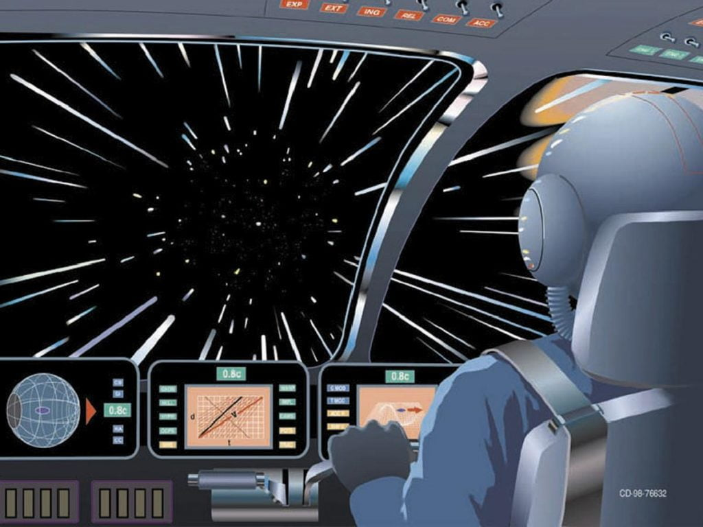
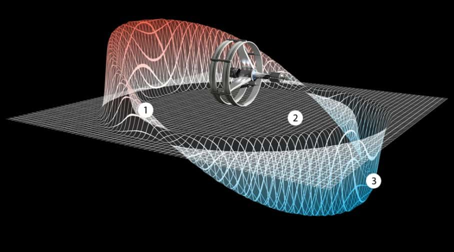

ဒီလို အလင်းလျှင်ထက် မြန်တဲ့ နှုန်းနဲ့ အာကာသထဲ ခရီးသွားတာက မူရင်းကတော့ Star Trek စိတ်ကူးယာဉ် သိပ္ပံ ဇါတ်လမ်းထဲက စိတ်ကူးယဉ်မှု တစ်ခုပဲ ဖြစ်ပါတယ်။ ဒါပေမယ့် ဒီ Star Trek ဇါတ်လမ်းတွဲတွေ ထုတ်လွှင့်ကတဲက ဒီ Warp Speed နဲ့ ခရီးသွားတာကို အာကာသ စိတ်ကူးယဉ် ဝတ္ထုနဲ့ ဇါတ်ညွှန်းရေး ဆရာတွေ အကြိုက်တွေ့ကုန်ကြပါတယ်။
Star Trek က စိတ်ကူးယဉ်လို့ ပြောလို့ရပေမယ့် ဒီ Star Trek ထဲက သိပ္ပံ အချက်အလက် အတော်များများဟာ တကယ့် ပြင်ပက ရူပဗေဒနဲ့ အခြားသိပ္ပံ အယူအဆတွေ အပေါ်မှာ အခြေခံ ထားကြတာပါ။ ဒီ အလင်းလျှင်လွန် ခရီးသွားခြင်းဟာလဲ လူအတော်များများရဲ့ စိတ်ကူးကို ဖမ်းစားနိုင်ခဲ့ပါတယ်။ ဒီလို ဖမ်းစားခဲ့တဲ့ သူတွေထဲမှာ သာမန်သူတွေတင်မက ရူပဗေဒ နယ်က ရူပဗေဒ ပညာရှင်များပါ ပါဝင်နေပါတယ်။

အလင်းလျှင်ထက် မြန်အောင်သွားဖို့ ဖြစ်နိုင်မလား
အိုင်းစတိုင်းရဲ့ နှိုင်းယှဉ်မှု နိယာမ အရ ဘယ်အရာမှ အလင်းလျှင်ထက် မြန်အောင် သွားလို့ မရပါဘူး။ တကယ် ပြောရရင် အလင်းလျှင်နဲ့ သွားဖို့ ဆိုတာတောင် မလွယ်လှပါဘူး။ ဒြပ်ရှိတဲ့ ဝတ္ထုတခုဟာ အလင်းအလျှင်နား နီးလာလေလေ သူ့ရဲ့ ဒြပ်ကလဲ ပိုများလာလေလေ ဖြစ်ပါတယ်။ (အလွယ်ပြောရရင် မြန်လာလေလေ၊ လေးလာလေလေ လို့ ပြောလို့ ရပါတယ်။) အလင်းလျှင်နှုန်းကို ရောက်သွားတဲ့ အခါမှာ သူ့ရဲ့ ဒြပ်ထုဟာ Infanity ခေါ်တဲ့ အနန္တ နား ကို ကပ်သွားပါတော့တယ်။အဲ့သည်လောက် ဒြပ်ထုကြီးကို တွန်းဖို့ ဆိုတာက အလွန် အင်မတန် ကြီးမားတဲ့ စွမ်းအင် လိုအပ်မှာ ဖြစ်ပါတယ်။ ဒီလောက် ကြီးမားတဲ့ စွမ်းအင်ကို ထုတ်ပေးနိုင်တဲ့ အင်ဂျင် တည်ဆောက်ဖို့ ဆိုတာက မလွယ်ပါဘူး။ အလင်လျှင်ထက် ပိုမြန်အောင် သွားဖို့ဆို ပိုလို့တောင် ကြီးမားတဲ့ စွမ်းအင် လိုအပ်နေပါတယ်။ နှိုင်းယှဉ်မှု နိယာမ အရ အလင်းလျှင်ထက် ပိုမြန်တဲ့ နှုန်းနဲ့ သွားမယ့် အရာဝတ္ထု တစ်ခုကို တွန်းဖို့ လိုအပ်တဲ့ စွမ်းအင်ကို ရရှိဖို့ မဖြစ်နိုင်ပါဘူး။
အိုင်းစတိုင်းရဲ့ နှိုင်းယှဉ်မှု နိယာမဟာ တနည်းအားဖြင့် ပြောရရင် စကြာဝဠာကြီး အတွင်းမှာ အမြန်ဆုံး သွားနိုင်တဲ့ ကန့်သတ်အလျှင် (Speed Limit) ကို ချမှတ်ပေးခဲ့တာပါ။ အဲ့သည်တော့ Warp Speed နဲ့ ခရီးသွားဖို့ ဆိုတာ နှိုင်းယှဉ်မှု နိယာမ အရ မဖြစ်နိုင်ပါဘူး။ တနည်းအားဖြင့်တော့ ဒီ Warp Speed အလင်းလျှင်လွန် ခရီသွားခြင်း ဆိုတာက ရုပ်ရှင်ထဲက စိတ်ကူးယဉ်မှု တခုထက် မပိုပါဘူး။
ဒါပေမယ့် ခနနေအုံးဗျ။ တကယ်ပဲ မဖြစ်နိုင်တော့ဘူးလား။ ရူပဗေဒ ပညာရှင်တွေကရော ဖြစ်နိုင်တဲ့ နည်းလမ်း ရှာမတွေ့ကြ ဘူးလားဗျာ။ အနည်းဆုံးတော့ သီအိုရီ အရ ဖြစ်နိုင်တဲ့ နည်းလမ်း မရှိတော့ဘူးလား။
သီအိုရီထဲက Warp Drive သဘောတရား
၁၉၉၄ ခုနှစ်မှာ ရူပဗေဒ သီအိုရီ ပညာရှင် (Theoretical Physicist) တစ်ဦးဖြစ်တဲ့ မီဂဲလ် အယ်လ်ကူဘီယဲ (Miguel Alcubierre) က ဒီလို Warp Speed အလင်းလျှင်လွန် နည်းနဲ့ ခရီးသွားဖို့ ဖြစ်နိုင်တဲ့ သီအိုရီ တစ်ခုကို တင်ပြခဲ့ပါတယ်။ သူက ဒီသီအိုရီကို တင်ပြရာမှာ ဒါဟာ လက်တွေ့ ဖြစ်နိုင်တဲ့ နည်းလမ်း အနေနဲ့ တင်ပြတာ မဟုတ်ပဲ ဒီလို အလင်းလျှင်လွန် ခရီးသွားဖို့ ဖြစ်နိုင်မယ့် သီအိုရီ ကိုသာ တင်ပြခဲ့တာ ဖြစ်ပါတယ်။ဒီ နည်းလမ်းနဲ့ ဖန်တီးထားတဲ့ Warp Drivde အင်ဂျင်ကို အယ်လ်ကူဘီယဲ အင်ဂျင် (Alcubierre drive) လို့ အမည်ပေးထား ကြပါတယ်။ သူ့ နည်းလမ်းကို မရှင်းပြခင် မူရင် Star Trek မှာ ဒီလို အလင်းလျှင်လွန် အမြန်နှုန်းရအောင် ဘယ်လို လုပ်ခဲ့လဲဆိုတာ ကြည့်ကြည့်ရအောင်ပါ။
မူရင်း Star Trek မှာ တပ်ဆင်ထားတဲ့ အလင်းလျှင်လွန် အင်ဂျင် (Warp Drive) မှာ လောင်စာ အနေနဲ့ ဒြပ် (Matter) နဲ့ ဆန့်ကျင်ဒြပ် (Anti-matter) နှစ်ခုကို အသုံးပြုထားပါတယ်။ ဒီ ဒြပ်နဲ့ ဆန့်ကျင်ဒြပ်မှုန်တွေ တိုက်မိတဲ့အခါ ကြီးမားတဲ့ စွမ်းအင် ထွက်လာပါတယ်။ ဒီစွမ်းအင်ကို အသုံးပြုပြီး အလင်လျှင်လွန် အင်ဂျင်ကို မောင်းနှင်တာ ဖြစ်ပါတယ်။
ပြဿနာက ဒီနည်းက အိုင်းစတိုင်းရဲ့ နှိုင်းယှဉ်ခြင်း နိယာမ အရ လိုအပ်တဲ့ စွမ်းအင်ကို ထုတ်ပေးနိုင်မှာ မဟုတ်တာပဲ ဖြစ်ပါတယ်။ Star Trek ဇါတ်လမ်းထဲမှာလဲ ဒီ Warp Drive အကြောင်း ဒီ့ထက်ပိုပြီး အသေးစိတ် ရှင်းမပြတော့ပါဘူး။
အခု အယ်လ်ကူဘီယဲ အင်ဂျင် ကတော့ အလင်းလျှင်လွန် အမြန်နှုန်း ရဖို့ကို အခြားနည်းလမ်းကို အသုံးပြု ထားပါတယ်။ သူ့ နည်းကတော့ အာကသနဲ့ အချိန် (Space-time) ထဲမှာ ဟာနေတဲ့ ပူဖေါင်းလေး တစ်ခု ဖန်တီးပေးလိုက်တာပဲ ဖြစ်ပါတယ်။ ဒီ ပူဖေါင်းလေးက သူ့ပတ်ဝန်းကျင်က အာကာသနဲ့ အချိန်ကို ဆွဲလိမ်ပြီး ချုံ့ပစ်လိုက်ပါတယ်။ ဈာန်ရ ရသေ့ရဟန်းတွေ မြေကြောရှုံ့ပြီး ခရီးသွားတယ် ဆိုတာမျိုးလိုပေါ့။ ဒီလို space-time အာကာသ ကျုံ့သွားတဲ့အခါ တစ်နေရာနဲ့ အခြား တစ်နေရာက နီးသွားပါတယ်။ ဒီ့အတွက် ခရီးသွားရတာလဲ ပိုမြန်သွားပြီး အလင်းလျှင်လွန် အမြန်နှုန်းနဲ့ ခရီးသွားသလို ဖြစ်သွားတာပေါ့။
ဒီ အလင်းလျှင်လွန် အင်ဂျင်မှာ ဆိုရင် ယာဉ်ရဲ့ တဖက်မှာ ရှိတဲ့ အာကာသ က ကျုံ့ဝင်သွားပြီး အခြားတဖက်က အာကာသက ပြန့်ထွက်သွားပါတယ်။ ဒီကျုံ့သွားတဲ့ ဖက်နဲ့ ပြန့်သွားတဲ့ အာကာသ နှစ်ခု အကြားမှာ ပူဖေါင်းလေး တစ်ခု ဖန်တီးယူပါတယ်။ ဒီ ပူဖေါင်းလေးဟာ အာကာသနဲ့ အချိန်ကနေ သီးခြား ကင်းလွတ်နေပါတယ်။ အာကာသ ယာဉ်က ဒီပူဖေါင်းလေးထဲမှာ ဝင်နေပြီး ခရီးသွားတာ ဖြစ်ပါတယ်။
ဒီလို ပူဖေါင်းလေး ဖြစ်အောင် Exotic Matter ခေါ်တဲ့ ထူးဆန်းဒြပ်ရဲ့ စွမ်းရည်နဲ့ ဖန်တီးတာပဲ ဖြစ်ပါတယ်။ ဒီ Exotic matter ထူးဆန်းဒြပ်ဟာ ပုံမှန် ရူပဗေဒ နိယာမတွေ၊ ဥပဒေသတွေကို လိုက်နာခြင်း မရှိပါဘူး။ ဒီ ထူးဆန်းဒြပ်ဟာ အမျိုးအစား အမျိုးမျိုး ရှိနိုင်ပါတယ်။ အခု ဒီ အင်ဂျင်အတွက် အသုံးပြုရမယ့် ထူးဆန်းဒြပ်ကတော့ အနှုတ်ဒြပ် ( Negative Mass) ပဲ ဖြစ်ပါတယ်။ (ဒီထူးဆန်းဒြပ်က ရူပဗေဒ ပညာရှင်တွေရဲ့ မှန်းဆချက် အနေနဲ့ပဲ ရှိသေးပြီး အခုအချိန်ထိ လက်ဆုပ်လက်ကိုင် အကောင်အထည် မပြနိုင်သေးသလို ရှိတယ်ဆိုတဲ့ အထောက်အထာလဲ မတွေ့ရ သေးပါဘူး။)

Alcubierre Warp Drive က ဘာ့ကြောင့် မဖြစ်နိုင်ရတာလဲ
လူအများကတော့ ဒီ အယ်လ်ကူဘီယဲ အင်ဂျင် ဟာ သီအိုရီ အားဖြင့်သာ ဖြစ်နိုင်ပြီး လက်တွေ့မှာ တည်ဆောက်ဖို့ မဖြစ်နိင်ဘူးလို့ ယူဆကြပါတယ်။ ဒီ သီအိုရီကို တင်ပြခဲ့တဲ့ မီဂဲလ် ကိုယ်နှိုက်ကိုက ဒီ သီအိုရီ ဟာ Thought Exercise ခေါ် စဉ်းစားတွေးခေါ်မှု တစ်ရပ်သာ ဖြစ်တယ်လို့ ပြောခဲ့ပါတယ်။ဒီ အလင်းလျှင်လွန် အင်ဂျင်ဟာ သီအိုရီ ပေါ်မှာသာ ရှိပြီး လက်တွေ့မှာ မဖြစ်နိုင်ဘူးလို့ ဆိုကြတာက အကြောင်းရှိပါတယ်။ ပထမ အချက်ကတော့ ဒီ အင်ဂျင်အတွက် လိုအပ်တဲ့ အနှုတ်ဒြပ် ဆိုတာ ရူပဗေဒ ပညာရှင်တွေရဲ့ မှန်းဆချက် တစ်ခုထက် မပိုသေးတာပါပဲ။ အခုထိ ဒီ အနှုတ်ဒြပ် (Negative Mass) ရှိတယ်ဆိုတဲ့ သက်သေ အထောက်အထားလဲ မရှိသေးပါဘူး။ (အနှုတ်ဒြပ် ဆိုတာက သူ့မှာရှိတဲ့ ဒြပ်က သုညအောက် အနှုတ်ပြနေတဲ့ ဒြပ်မို့ပါ။)
ဒုတိယ အချက်က ပိုအရေးကြီးပါတယ်။ ဒါကဘာလဲဆိုတော့ အကယ်လို့ အနှုတ်ဒြပ်ကို ရှာဖွေတွေ့ရှိခဲ့မယ် ဆိုရင်တောင် ဒီအင်ဂျင် မောင်းနှင်ဖို့ လိုအပ်မယ့် အနှုတ်ဒြပ်က ဂျူပီတာ (ကြာသပတေးဂြိုလ်) ကြီး တလုံးစာလောက် လိုမှာ ဖြစ်ပါတယ်။ ကြာသပတေးဂြိုလ် ဆိုတာ နေအဖွဲ့အစည်းရဲ့ အကြီးဆုံးဂြိုလ်ပါ။ ဒီတော့ ဒီလောက်ကြီးတဲ့ အနှုတ်ဒြပ်နဲ့ အာကာသယာဉ်တစ်ခုဖြစ်အောင် တည်ဆောက်ဖို့က မဖြစ်နိုင်ပါဘူး။
နောက်တခါ ဒီလောက်ကြီးတဲ့ ဒြပ်ထုကို ရွှေ့လျှားဖို့ လိုအပ်တဲ့ စွမ်းအင်လိုအပ်ချက်ကလဲ အရမ်းကြီးမှာ ဖြစ်ပါတယ်။ ဒီစွမ်းအင်လိုအပ်ချက်ကို ဖြည့်စည်းပေးဖို့ကလဲ မဖြစ်နိုင် ပြန်ပါဘူး။
အဆိုးဆုံးကတော့ ဒီယာဉ်ရဲ့ သွားမယ့် ဦးတည်ချက်ကို မထိန်းချုပ်နိုင်တာပဲ ဖြစ်ပါတယ်။ ယာဉ်ရဲ့ ဦးတည်ရာသည် သွားချင်တဲ့ ဖက်ကို သွားမှာ ဖြစ်ပြီး ဒီယာဉ်ကို ထိန်းကျောင်းမောင်းနှင်နိုင်မယ့် နည်းလမ်းလဲ ရှာမတွေ့သေးပါဘူး။
နာဆာရဲ့ Warp Drive သုတေသန
ဒီ သီအိုရီကို တင်ပြခဲ့သူ ကိုယ်နှိုက်က မဖြစ်နိုင်ပါဘူးလို့ ပြောပေမယ့် ဒီ သီအိုရီကို ဆက်လက် စူးစမ်း လေ့လာ မှု ပြဖို့ စိတ်ဝင်စားတဲ့ ရူပဗေဒ ပညာရှင်တွေ ပေါ်ထွက်လာပါတယ်။ ဒီလို စိတ်ဝင်စားတဲ့ သူတွေထဲမှာ နာဆာ အာကာသ အေဂျင်စီက သိပ္ပံ ပညာရှင်တွေလဲ ပါဝင်ပါတယ်။နာဆာက အင်ဂျင်နီယာနဲ့ အသုံးချ ရူပဗေဒ ပညာရှင် ဟာရိုးလ် ဆန်နီ ဝှိုက် (Harold Sonny White) ဦးဆောင်တဲ့ သုတေသန အဖွဲ့ဟာ အခုအချိန်မှာ ဒီ အလင်းလျှင်လွန်နှုန်းနဲ့ သွားနိုင်မယ့် Warp Drive သုတေသန ပြုလုပ်နေပါတယ်။ သူ့အဆိုအရ အကယ်လို့ အနှုတ်ဒြပ် ပူပေါင်းရဲ့ ပုံသဏ္ဍာန်ကို ပြောင်းလဲပေးခြင်းအားဖြင့် နဂိုမူလ လိုအပ်ချက်ဖြစ်တဲ့ ဂျူပီတာ ဂြိုလ်လောက် ဒြပ်ထု လိုအပ်ချက်ကနေ ကီလိုဂရမ် ၇၀၀ လောက်ထိ လျှော့ချနိုင်မယ်လို့ ဆိုပါတယ်။
နောက်ပြီး ယာဉ်ကို ထိန်းချုပ်မောင်းနှင်ဖို့ အတွက်ကိုလဲ ဝှိုက်နဲ့ အဖွဲ့က အလင်းလျှင်လွန် အင်ဂျင် စတင် မမောင်းနှင်မီမှာ ယာဉ်ကို အရင် အရှိန်မြှင့် မောင်းနှင်ဖို့ အဆိုပြုပါတယ်။ ဒီနည်းအားဖြင့် အလင်းလျှင်လွန် အင်ဂျင်စတင်တဲ့ အခါ မူလ မောင်းနှင်နေတဲ့ လမ်းကြာင်းအတိုင်း ဆက်လက်ပြေးလွားသွားမယ်လို့ ဆိုပါတယ်။
ဝှိုက်နဲ့ အဖွဲ့ရဲ့ တွက်ချက်မှုအရ ဒီ အလင်းလျှင်လွန် အာကာသ ယာဉ်တွေဟာ အလင်းလျှင်နှုန်းရဲ့ ၁၀ ဆလောက် ရှိတဲ့ အမြန်နှုန်းနဲ့ သွားနိုင်ကြလိမ့်မယ်လို့ ဆိုပါတယ်။
ဝှိုက်ဟာ လက်ရှိမှာ နာဆာက အင်ဂျင်နီယာ သုတေသနအဖွဲ့တခုကို ဦးစီးပြီး Warp ပူပေါင်း သေးသေးလေး စမ်းသပ်လုပ်ဆောင်နိုင်ဖို့ ကြိုးစားနေပါတယ်။ ဒီ စမ်းသပ်မှု ရလဒ်ကနေတော့ နေ့ချင်းညချင်း အခြားကြယ်တွေကို ခရီးသွားနိုင်မယ့် Warp Drive ပေါ်ထွက်လာအုံးမှာတော့ မဟုတ်သေးပါဘူး။ ဒါပေမယ့် နာဆာက အင်ဂျင်နီယာ တွေကတော့ သိပ်မဝေးတော့တဲ့ အနာဂါတ် တခုမှာ အခြားကြယ်တွေဆီ Warp Speed နဲ့ ခရီးသွားဖို့ ဖြစ်လာမယ်လို့ ယုံကြည်နေကြပါတယ်။
Star Trek ဇါတ်လမ်းတွဲရဲ့ အဆိုအရဆို ၂၀၆၃ ခုနှစ်မှာ ကျွန်တော်တို့ လူသားတွေဟာ Warp Drive နဲ့ အလင်းလျှင်လွန် ခရီးသွားခြင်းကို အောင်မြင်စွာ တီထွင်နိုင်ခဲ့ကြပါတယ်။
References:
Is NASA Actually Working On a Warp Drive? | Popular Mechanics
According to NASA researchers — Warp Drive is getting closer to reality | The Bright Side News